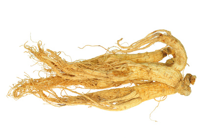

American Ginseng (Panax quinquefolius)

Mating & Breeding System: The primary marketable product of ginseng is the root, but ginseng seed is also a marketable commodity.
Individual flowers are protandrous (male function occurs before female function), but a cluster of flowers (inflorescence) will have functionally male and female flowers at any given time. Experiments have shown that the plants are fully self-fertile.
It is possible that insects can help move pollen within an inflorescence, providing some cross-pollination. This may happen in large commercial gardens in particular. The major pollinators are wild bees, notably in the family Halictidae, and syrphid flies. Some growers will add honey bees to these large gardens at time of bloom.
Pollination, Quality & Yield: Bagging experiments indicated there is no reduction in fruit set or seed production when pollinators are excluded. However, insect mediated cross-pollination may be useful in maintaining genetic diversity in Ontario seed stock, which can help guard against the numerous diseases to which crops grown in large gardens are vulnerable. In cross-pollination experiments with wild and cultivated ginseng, offspring from cross-pollinated plants had greater height, leaf area, and root biomass compared to the offspring of self-pollinated plants.
Pollination Recommendations: Honey bees are sometimes used to facilitate pollination in ginseng operations that produce seed for their own use. The recommended rate is 2.5 colonies per hectare.
If insects are indeed required to facilitate pollination, then wild pollinators are likely not up to the tasks of pollinating large operations. Pollinators used to foraging in open, sunlit conditions may be reluctant to visit plants grown under shade.
Further research is needed on benefits of cross-pollination on ginseng seed yield and offspring health (if any), in addition to the effectiveness of managed pollinators on the crop.
References
Carpenter, S.G. & Cottam, G. 1982. Growth and reproduction of American ginseng (Panax quinquefolius) in Wisconsin, USA. Canadian Journal of Botany 60:2692-2696.
Catling, P.M. & Spicer, K.W. 1995. Pollen vectors in an American ginseng (Panax quinquefolius) crop. Economic Botany 49:99-102.
Duke, J.A. 1980. Pollinators of Panax? Castanea 45:141.
Lewis, W.H. & Zenger, V.E. 1983. Breeding systems and fecundity in the American ginseng, Panax quinquefolium(Araliaceae). American Journal of Botany 70:466-468.
Mooney, E.H. & McGraw, J.B. 2007. Effects of self-pollination and outcrossing with cultivated plants in small natural populations of American ginseng, Panax quinquefolius (Araliaceae). American Journal of Botany 94:1677-1687.
Schluter, C. & Punja, Z. 2000. Floral biology and seed production in cultivated north american ginseng (Panax quinquefolius). Journal of the American Society of Horticultural Science 125:567-575.